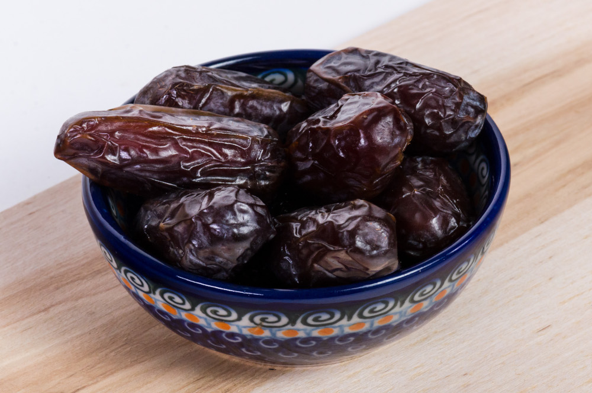

Benefícios nutricionais
As tâmaras, devido ao alto conteúdo de hidratos de carbono simples e complexos (72%) constituem um alimento muito energético (274 Kcal por 100 gramas de tâmara seca). São ideais para aqueles que precisam de muita energia, como crianças e esportistas.
Falando em esportes, as tâmaras são ricas em potássio (790 mg por 100 g de tâmara seca), cobre (0,24 mg), magnésio (65 mg) y cálcio (59 mg).
Além disso, pelo seu conteúdo em açucares complexos, são metabolizadas pelo organismo de forma demorada. Isto é uma qualidade interessante quando temos que manter um ritmo intenso de esforço físico ou mental por um período longo de tempo (esportes de resistência ou probas de longa duração).As tâmaras são também ricas em ácido pantoténico o vitamina B5, conhecida pelos seus efeitos tranqüilizantes. Assim, têm quem chame as tâmaras de “doses naturais de anti-estressante” pela capacidade que tem de relaxar e proporcionar uma sensação de bem-estar. Também pode ser interessante comer algumas tâmaras antes de dormir por conter triptófano que estimula a formação de melatonina, que pode contribuir a conciliar o sono e evitar a insônia.
Para quem quizer uma análise mais detalhada das propriedades nutricionais da tâmara, recomendo visitar a página da Nutrition Data (em inglés).
#2. Creative WordPress Themes
Temporibus ad error suscipit exercitationem hic molestiae totam obcaecati rerum, eius aut, in. Exercitationem atque quidem tempora maiores ex architecto voluptatum aut officia doloremque. Error dolore voluptas, omnis molestias odio dignissimos culpa ex earum nisi consequatur quos odit quasi repellat qui officiis reiciendis incidunt hic non? Debitis commodi aut, adipisci.

Quisquam esse aliquam fuga distinctio, quidem delectus veritatis reiciendis. Nihil explicabo quod, est eos ipsum. Unde aut non tenetur tempore, nisi culpa voluptate maiores officiis quis vel ab consectetur suscipit veritatis nulla quos quia aspernatur perferendis, libero sint. Error, velit, porro. Deserunt minus, quibusdam iste enim veniam, modi rem maiores.
Odit voluptatibus, eveniet vel nihil cum ullam dolores laborum, quo velit commodi rerum eum quidem pariatur! Quia fuga iste tenetur, ipsa vel nisi in dolorum consequatur, veritatis porro explicabo soluta commodi libero voluptatem similique id quidem? Blanditiis voluptates aperiam non magni. Reprehenderit nobis odit inventore, quia laboriosam harum excepturi ea.
Adipisci vero culpa, eius nobis soluta. Dolore, maxime ullam ipsam quidem, dolor distinctio similique asperiores voluptas enim, exercitationem ratione aut adipisci modi quod quibusdam iusto, voluptates beatae iure nemo itaque laborum. Consequuntur et pariatur totam fuga eligendi vero dolorum provident. Voluptatibus, veritatis. Beatae numquam nam ab voluptatibus culpa, tenetur recusandae!
Voluptas dolores dignissimos dolorum temporibus, autem aliquam ducimus at officia adipisci quasi nemo a perspiciatis provident magni laboriosam repudiandae iure iusto commodi debitis est blanditiis alias laborum sint dolore. Dolores, iure, reprehenderit. Error provident, pariatur cupiditate soluta doloremque aut ratione. Harum voluptates mollitia illo minus praesentium, rerum ipsa debitis, inventore?